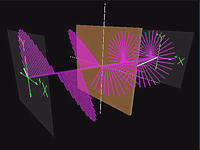
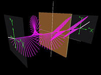
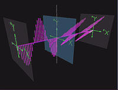
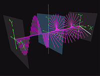
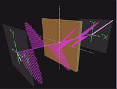

QuickTime movies from the Polarization TOP module
Note: Click on the thumbnails to see the 640x480 resolution movies.
|  |
Left circularly polarized light incident upon a quarter-waveplate.
The fast axis of the waveplate is the x-axis.
The behaviour of the field inside the waveplate is not being shown.
|
|  |
Linearly polarized light incident upon a quarter-waveplate. The incident light is polarized at an angle of 45o with respect to the positive x-axis. The fast axis of the waveplate is the x-axis. The behaviour of the field inside the waveplate is not being shown. Click here to see the 320x200 version. |
|  |
Linearly polarized light incident upon a linear polarizer. The incident light makes an angle of 45o with respect to the positive x-axis. The transmission axis of the polarizer is the y-axis. Click here to see the 320x200 version. |
|  |
Left circularly polarized light incident upon a linear polarizer. The transmission axis of the polarizer is the y-axis. Click here to see the 320x200 version. |
|  |
Linearly polarized light incident upon a half-waveplate. The incident light is polarized at angle of 45o with respect to the positive x-axis. The fast axis of the waveplate is the x-axis. The behaviour of the field inside the waveplate is not being shown. Click here to see the 320x200 version. |
Created
by Srihari Angaluri and Kiril Vidimce
Send comments to comments@webtop.org